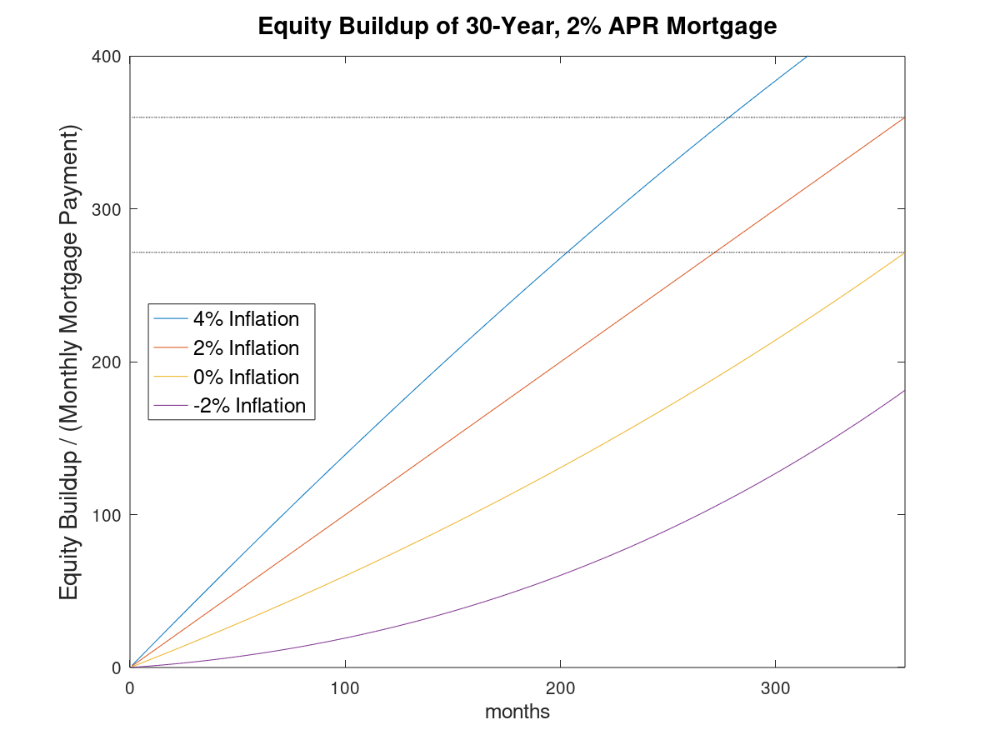

Equity Buildup
Sep. 2021
The mortgage calculator proved that mortgage principal and monthly payments (p) are related by an independent constant, set by interest rates (r) and loan period (N). The next three articles used this to build a relationship between home prices and rent, but did not account for a major difference between borrowing and renting—building up equity in a home.

Similarly, the results show the rate of nominal equity buildup (ΔEn) is independent of the price tag and can be applied equivalently to any sized mortgage (∝p). The second significant result is the impact of inflation on the gains from the loan liability, making equity buildup much more biased towards a straight line that the exponential curve typically associated with mortgages due to paying off a growing portion of principal each month.
Unlike inferior mortgage calculators with admittedly pretty, quasi-exponential interactive graphics, this site's calculator and articles emphasize the linear aspects of mortgages in the 21st Century. The next article continues down this path by defining the leverage ratio and also accounting for closing costs, which are not included in the proof below.
Equity Buildup Proof
The equity gained each month is due to the amount of principal repayed (i.e. difference between principal remaining between month m and m+1) and due to exposure to inflation/deflation of the remaining liability.

Equity buildup uses the same mortgage equations proved for the mortgage calculator, except the loan period 'N' is replaced by a number of 'm' months owned. 'P0' is initial loan principal, 'p' the monthly payment, and 'r' the monthly interest multiplication factor.

The sum of nominal gains over n months 'ΔEn':

All that remains is slight rearrangement for aesthetics and description. This equation describes equity buildup of the loan liability itself, the next article accounts for closing costs and financing fees which are not included in this equation.
One degenerate result is if inflation was zero, the final value reached over the loan period is equal to Rm, but one interesting results is that this equation devolves into a straight line if inflation rates equal interest rates. This will be explored further later in this series.